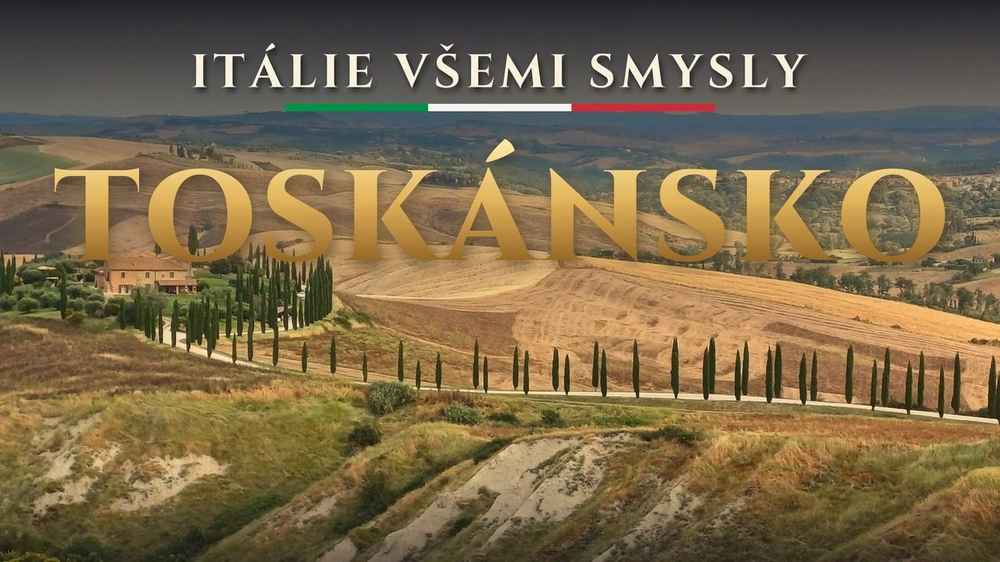
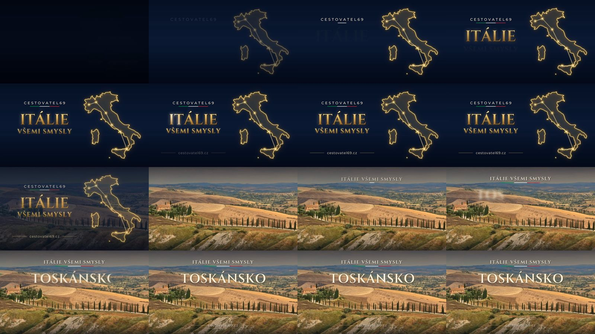

Ty
Píšeš běžnou češtinou, co má vzniknout: „Udělej novou časovou osu, dej na začátek intro a pod něj hudbu.“
AI v praxi · střih videa
Jak jsem propojil Claude Code s programem DaVinci Resolve, co všechno se dá nastavit i ve verzi zdarma a jak takhle vzniká moje cestovatelská série „Itálie všemi smysly“ — od fotek a scénáře přes český komentář až po hotové video.
Zpracoval Budinský Luděk · Aktualizováno 20. listopadu 2026
Video jsem nestříhal myší — časovou osu v DaVinci Resolve poskládal Claude přes MCP. Uvidíš most ve verzi zdarma, první kontrolní dotaz i živé skládání osy s Fusion a renderem.
České titulky lze zapnout v přehrávači.
Claude sám o sobě umí psát a radit, ale na tvém počítači nic neovládá. MCP (Model Context Protocol) je společný „konektor“, přes který mu zpřístupníš konkrétní nástroje. MCP server pro DaVinci Resolve překládá požadavky typu „vlož tyhle klipy na osu“ na příkazy oficiálního skriptovacího rozhraní Resolve.
Píšeš běžnou češtinou, co má vzniknout: „Udělej novou časovou osu, dej na začátek intro a pod něj hudbu.“
Rozloží úkol na kroky, volí nástroje MCP serveru, čte jejich výsledky a průběžně kontroluje, co se povedlo.
Dělá skutečnou práci: import, časová osa, Fusion efekty, barvy, render. Projekt zůstává normálně otevřený a vidíš každou změnu.
Já používám open-source projekt davinci-resolve-mcp (licence MIT, v listopadu 2026 verze 4.19). Obecné vysvětlení MCP, skills a konektorů je v mém průvodci AI v praxi.
Rozhodující je, jakou verzi Resolve máš. Blackmagic omezuje externí skriptování na placenou verzi Studio — ale verze zdarma se dá ovládat přes malý „most“ spuštěný přímo uvnitř Resolve.
| Verze Resolve | Jak se Claude připojí | Poznámka |
|---|---|---|
| Studio (placená) | Přímo — v Předvolbách zapneš externí skriptování „Local“. | Nejjednodušší cesta. Od verze 21.1 má Studio navíc vlastního AI asistenta s napojením na Claude Code. |
| Zdarma 21.0.x | Přes most resolve_bridge spuštěný z menu Workspace → Scripts. | Tohle používám já (21.0.3). Funguje spolehlivě, ale je potřeba ho po každém startu Resolve zapnout. |
| Zdarma 21.1 a novější | Pravděpodobně vůbec. | Verze 21.1 přesunula Python skripty do Studia. Pokud stříháš zdarma, neaktualizuj. |
Instalace trvá kolem patnácti minut. Instalátor sám najde cesty k Resolve, vytvoří virtuální prostředí Pythonu a umí zapsat konfiguraci do Claude Code i dalších aplikací.
Buď jedním příkazem přes npm, nebo naklonuj repozitář z GitHubu a spusť instalátor.
Studio: Preferences → General → External scripting using → Local. Zdarma: nainstaluj most.
Instalátor zapíše server do konfigurace. Případně ho doplníš ručně (viz níže).
Jen verze zdarma: otevři projekt a v menu Workspace → Scripts klikni na resolve_bridge.
Zeptej se na něco, co nic nemění — třeba jaký projekt je otevřený.
npx davinci-resolve-mcp setup
git clone https://github.com/samuelgursky/davinci-resolve-mcp.git cd davinci-resolve-mcp python install.py
python scripts/install_resolve_bridge.py # restartuj Resolve, otevři projekt a pak: # Workspace → Scripts → resolve_bridge
Most poslouchá jen na tomto počítači (loopback) a každý požadavek je podepsaný, takže se k Resolve nepřipojí nikdo zvenku. Když most běží, MCP server ho použije automaticky.
Pokud instalátor konfiguraci nezapíše, přidej server do sekce mcpServers. Cesty uprav podle svého počítače — tady jsou výchozí umístění Resolve na Windows:
"davinci-resolve": {
"type": "stdio",
"command": "C:\\cesta\\k\\davinci-resolve-mcp\\venv\\Scripts\\python.exe",
"args": ["C:\\cesta\\k\\davinci-resolve-mcp\\src\\server.py"],
"env": {
"RESOLVE_SCRIPT_API": "C:\\ProgramData\\Blackmagic Design\\DaVinci Resolve\\Support\\Developer\\Scripting",
"RESOLVE_SCRIPT_LIB": "C:\\Program Files\\Blackmagic Design\\DaVinci Resolve\\fusionscript.dll",
"PYTHONPATH": "C:\\ProgramData\\Blackmagic Design\\DaVinci Resolve\\Support\\Developer\\Scripting\\Modules"
}
}
Když se nic nepřipojí, spusť python scripts/doctor.py — zkontroluje verzi Pythonu, 32/64 bit a další typické chyby a vypíše konkrétní opravu.
Resolve na Macu hledá Python jen na dvou místech. Pokud máš Python z Homebrew nebo condy, nastav PYTHON3HOME přes launchctl setenv a Resolve restartuj. Podrobnosti jsou v README projektu v kapitole „Free edition“.
První zadání by nemělo nic měnit. Ověříš spojení a zároveň uvidíš, jak Claude „vidí“ tvůj projekt.
Zkopíruj do Claude Code, když máš v Resolve otevřený projekt.
Připoj se k DaVinci Resolve a jen popiš, co vidíš: název otevřeného projektu, seznam časových os, počet stop a klipů na aktuální ose, rozlišení a snímkovou frekvenci. Nic neměň, nic nemaž a nic nerenderuj.
Ve střihu se dá snadno přijít o hodiny práce. MCP server má pojistky — destruktivní akce chtějí potvrzení a zdrojová média nikdy nemění — ale zvyk „nejdřív přečti, pak plánuj, pak teprve měň“ se vyplatí. Já navíc nechávám Claude uložit projekt po každém větším kroku.
Moje série Itálie všemi smysly skládá region z vlastních záběrů z cest, fotografií a klidného českého komentáře. Nejde o stříhání mluveného videa, ale spíš o dokument: stovky záběrů, každý s pohybem kamery, prolínačkou a větou, která mluví právě o tom, co je v obraze. Celý díl Toskánsko má přes 30 minut a víc než 300 záběrů.


Přednostně vlastní záběry a fotky. Cizí fotky jen s licencí, která dovoluje použití (CC0, CC BY, CC BY-SA, Pexels, Unsplash), nikdy NC/ND. Ke každé si zapíšu autora a odkaz — z toho pak vznikne stránka zdrojů na webu. Lidi v popředí rozmazávám, náhodné kolemjdoucí v davu nechávám.
Každá scéna má jeden hlavní objekt (katedrála, náměstí, krajina) a jednu větu přesně o něm. Claude objekt pozná z obrazu, GPS v metadatech a názvu složky — a když si není jistý, nehádá a ptá se. Věta nesmí přetéct do dalšího záběru. Text vždy nejdřív schvaluji já.
Hlas generuji v ElevenLabs. Pro hlas existuje zvláštní fonetický přepis italských jmen (Palazzo Pubblico → „Palatso Publiko“), titulky mají normální pravopis. Než se cokoliv vygeneruje, Claude spočítá cenu v kreditech i s rezervou — díl se nikdy nenamluví jen napůl.
Skript podle délky nahrávek spočítá časovou osu. FFmpeg připraví klipy: zpomalení vlastních záběrů, stabilizaci chůze, lehký barevný grade, hlasitost hlasu a hudbu, která se pod hlasem sama ztiší. Velké díly převádím do ProRes, protože Resolve zdarma neunese stovky 4K H.264 klipů.
Teprve tady přichází na řadu MCP: import médií, nová časová osa, stopy V1–V3 a A1–A2, rozmístění scén na přesné snímky, intro, outro a názvy míst. Pohyb kamery a prolínačky vkládám jako Fusion kompozice, které Claude vygeneruje jako text a naimportuje ke každému záběru.
Render jde na síťový disk. Pak přichází kontrola: rozlišení a kodek, hlasitost podle normy EBU R128 (−18 LUFS), kontaktní listy snímků na začátku a konci každé věty. Místní Whisper přepíše komentář a upozorní na italská jména, která neslyšel správně — ta si pak pustím sám.
Ze scénáře vzniknou české titulky (SRT), z vybraných scén svislý Short 9:16 a miniatury. Na web jde mapa míst a seznam autorů fotek, do popisu videa jen krátký odkaz. Video nahrávám na YouTube nejdřív jako soukromé.
Výběr míst, schválení textu, poslech výslovnosti a konečný verdikt „je to dobré“. Claude video neslyší a nepřehrává — kontroluje snímky, čísla a měření. Vkus a rozhodnutí o příběhu zůstávají na člověku.
Výsledek můžeš vidět na mém kanálu YouTube @cestovatel69; mapa míst dílu Toskánsko je na stránce Toskánsko — místa na mapě.
Tohle jsou věci ověřené na vlastní kůži s Resolve zdarma 21.0.3 — ušetří ti několik večerů.
Než jsem článek dopsal, prošel jsem videa, která k tématu na YouTube vycházejí. Každý ho používá trochu jinak — a stojí za to vidět rozdíly.
Jason Cooperson ukazuje stejný MCP server na videu, kde mluví do kamery: hrubý střih za pár minut, barevné sjednocení skupinou klipů a LUT za dvě minuty, grafiku přes open-source HyperFrames. Zároveň poctivě ukazuje, co musel doklikat ručně.
Matúš Takáč ve slovenském návodu připojuje Claude Code k novému AI asistentovi ve Studiu 21.1: střih podle voiceoveru, vyhození hluchých míst, převod barev ze S-Log3 a titulky. Upozorňuje, že ve verzi zdarma to nejde a že s nejsilnějším modelem to fungovalo výrazně lépe.
Luke Byrne se soustředí na motion grafiku, která zůstane upravitelná: text a masky jako uzly ve Fusion, nejdřív kontrola projektu bez změn, pak jedna přesná úprava místo přestavby celé kompozice.
Můj postup se liší hlavně v tom, že Claude u mě nestříhá hotový materiál, ale skládá celý dokument podle scénáře — a že běží na verzi zdarma. Většinu „inteligence“ proto nesou moje skripty a pravidla (co smí být v záběru, jak dlouhá smí být věta, jak hlasité musí být video), MCP je ruka, která to v Resolve provede.
Funguje mi zadávat výsledek a hranice, ne jednotlivá kliknutí. Claude si kroky rozmyslí sám, já kontroluji plán a výstup.
„Vytvoř v Resolve nový projekt a časovou osu 1920×1080 / 25 fps. Naimportuj soubory ze složky klipy a audio. Rozmísti scény podle plan.json na přesné snímky, hlasy na A1, hudbu na A2. Po každých deseti klipech projekt ulož. Nic nemaž.“
„Z hotového renderu udělej kontaktní list: snímek 1 s po začátku a 0,5 s před koncem každé věty. U každé scény napiš, jestli je v obraze objekt, o kterém věta mluví. Změř hlasitost podle EBU R128.“
„Ve scéně 14 je špatně výslovnost. Přegeneruj jen tuto větu, zkontroluj, že se vejde do stejného času, a vyměň zvuk v hotovém MP4 bez nového renderu.“
Celý můj postup mám sepsaný jako skill — návod, který si Claude načte na začátku práce: kde jsou podklady, jaká jsou pravidla, co nejde a jak to obejít. Každá nová past, na kterou narazíme, se do něj dopíše. Díky tomu se stejná chyba neopakuje a další díl začíná tam, kde předchozí skončil.
Nainstaluj MCP server, ověř spojení zadáním, které nic nemění, a zkus složit pár klipů s hudbou. Na velké projekty můžeš navázat, až budeš vědět, kde má tvůj Resolve hranice.
Zpět na nastavení ↗Ověřeno 20. 11. 2026 na DaVinci Resolve 21.0.3 (zdarma) s Claude Code. Zdroje: davinci-resolve-mcp na GitHubu · Architektura MCP · DaVinci Resolve. Další AI témata: AI v praxi.